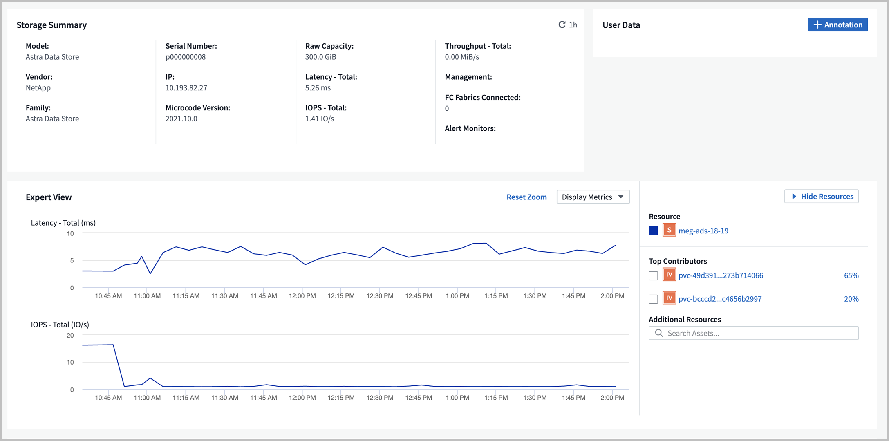
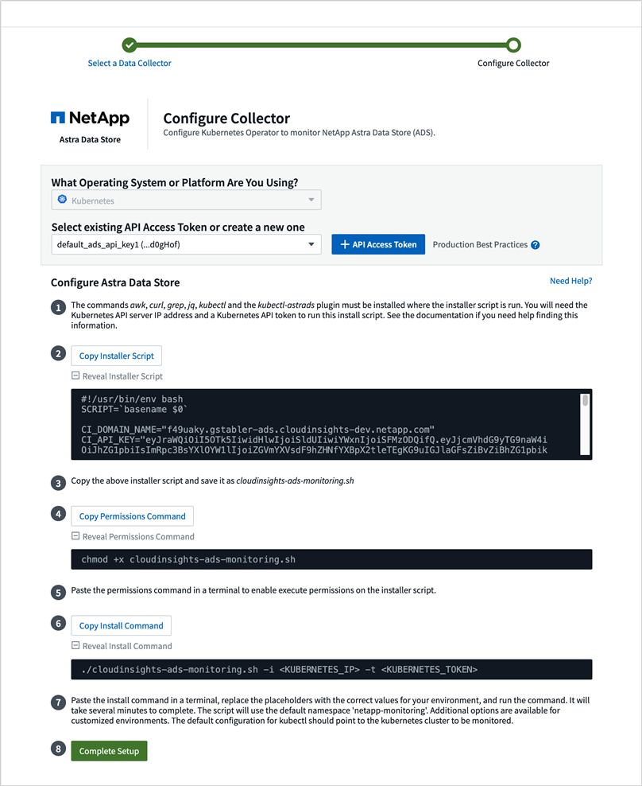

ドキュメントの変更をリクエスト
ドキュメントの変更をリクエスト GitHub で編集
GitHub で編集 寄稿者向けガイド
寄稿者向けガイドCloud Insights で指標を監視
寄稿者
Cloud Insights を使用して、 Astra データストアのプレビュー指標を監視できます。
Cloud Insights に表示される Astra データストアプレビュー指標の例を次に示します。
を使用して、 Astra データストアのプレビューで生成された指標のリストを表示することもできます [Open Metrics API help]。
Cloud Insights 接続の前提条件となる作業を完了する
Cloud Insights を使用して Astra データストアに接続する前に、次の作業を完了する必要があります。
-
"Astra Data Store Monitoring Operator をインストールします" これは、 Astra Data Store プレビューインストール手順の一部です。
-
"kubectl-astras バイナリをインストールします" これは、 Astra Data Store プレビューインストール手順の一部です。
-
'awk 、 curl 、 grep ' および 'jq' の各コマンドが使用可能であることを確認します
次の情報を収集します。
-
* Cloud Insights API アクセストークン * 。各カテゴリに対する読み取り / 書き込み権限： Acquisition Unit 、 Data Collection 、 Data Ingestion 、 Log Ingestionこれは、読み取り / 書き込み処理、 Acquisition Unit のセットアップ、およびデータの取り込みプロセスのセットアップに使用されます。
-
* Kubernetes API サーバの IP アドレスとポート * 。Astra データストアプレビュークラスタを監視するために使用します。
-
* Kubernetes API トークン * 。これは Kubernetes API を呼び出すために使用されます。
-
* 永続ボリューム構成 * 。永続ボリュームのプロビジョニング方法に関する情報。
Acquisition Unit のストレージ
Acquisition Unit には、インストールファイル、設定データ、およびログを格納するための永続ボリュームが 3 つ必要です。Monitoring Operator は、デフォルトのストレージクラスを使用して、永続的ボリューム要求を作成します。インストーラ・スクリプトの実行時に '-s' オプションを使用して ' 別のストレージ・クラス名を指定できます
Kubernetes クラスタにストレージプロビジョニングツール（ NetApp Trident など）がない場合は、インストーラスクリプトの実行時に -r オプションを使用してローカルファイルシステムパスを提供できます。-r オプションが設定されている場合 ' インストーラ・スクリプトは ' 指定されたディレクトリ内に 3 つの永続ボリュームを作成しますこのディレクトリには、 150GB 以上の空きスペースが必要です。
インストールスクリプトをダウンロードして実行します
Cloud Insights では、 Bash スクリプトを使用して Astra データストアのプレビュー監視を監視オペレータから有効にすることができます。インストールスクリプトは、 Astra Data Store コレクタ、 Telegraf エージェント、および Fluent ビットエージェントを備えた Acquisition Unit をインストールします。
Cloud Insights テナントのドメイン名と選択した Cloud Insights API アクセストークンは、ダウンロード時にインストーラスクリプトに組み込まれます。
その後、次のように指標が送信されます。
-
Telegraf は指標を Cloud Insights データレイクに送信します。
-
FLUENT ビットは、ログ取り込みサービスにログを送信します。
インストーラスクリプトのヘルプを表示します
インストーラスクリプトの完全なヘルプテキストを次に示します。
インストーラスクリプトのヘルプテキストを表示します。
./cloudinsights-ads-monitoring.sh -h
対応：
USAGE: cloudinsights-ads-monitoring.sh [OPTIONS]
Configure monitoring of Astra Data Store by Cloud Insights.
OPTIONS:
-h Display this help message.
-d ci_domain_name Cloud Insights tenant domain name.
-i kubernetes_ip Kubernetes API server IP address.
-k ci_api_key Cloud Insights API Access Token.
-n namespace Namespace for monitoring components. (default: netapp-monitoring)
-p kubernetes_port Kubernetes API server port. (default: 6443)
-r root_pv_dir Create 3 Persistent Volumes in this directory for the Acquisition Unit.
Only specify this option if there is no Storage Provisioner installed and the PVs do not already exist.
-s storage_class Storage Class name for provisioning Acquisition Unit PVs. If not specified, the default storage class will be used.
-t kubernetes_token Kubernetes API server token.
インストールスクリプトを実行します
-
Cloud Insights アカウントがない場合は作成します。
-
Cloud Insights にログインします。
-
Cloud Insights メニューから、 Admin>*Data Collector* をクリックします。
-
「 * + Data Collector * 」をクリックして、新しいコレクタを追加します。

-
「 * アストラデータストア * 」タイルをクリックします。
-
正しい Cloud Insights API アクセストークンを選択するか、新しいトークンを作成します。
-
指示に従って、インストーラスクリプトをダウンロードし、権限を更新し、スクリプトを実行します。
このスクリプトには、 Cloud Insights テナントの URL と選択した Cloud Insights API アクセストークンが含まれています。

-
スクリプトが完了したら、 [ セットアップの完了 ] をクリックします。
インストールスクリプトが完了すると、「データソース」リストに「 Astra Data Store 」コレクタが表示されます。

エラーが原因でスクリプトが終了した場合は、エラーが解決してから再度実行できます。デフォルトの設定を使用しない環境では、 Monitoring Operator 名前空間や Kubernetes API サーバポートなどの追加のパラメータがサポートされます。使い方とヘルプテキストを表示するには、 cloudinsights-ads-monitoring.sh -h オプションを使用します。 設定が正常に完了すると、次のような出力が生成されます。
Configuring Cloud Insights monitoring for Astra Data Store . . . Configuring monitoring namespace ... Configuring output sink and Fluent Bit plugins Configuring Telegraf plugins Configuring Acquisition Unit ... Acquisition Unit has been installed successfully. Configuring Astra Data Store data collector Astra Data Store collector data '<CLUSTER_NAME>' created Configuration done!
エージェント CR の例
以下に、インストーラスクリプトの実行後の「 Monitoring - NetApp 」エージェントの CR の例を示します。
spec:
au:
isEnabled: true
storageClassName: auto-sc
cluster-name: meg-ads-21-22-29-30
docker-repo: docker.repo.eng.netapp.com/global/astra
fluent-bit:
- name: ads-tail
outputs:
- sink: ADS_STDOUT
substitutions:
- key: TAG
value: firetapems
- key: LOG_FILE
values:
- /var/log/firetap/*/ems/ems
- /var/log/firetap/ems/*/ems/ems
- key: ADS_CLUSTER_NAME
value: meg-ads-21-22-28-29-30
- name: agent
- name: ads-tail-ci
outputs:
- sink: CI
substitutions:
- key: TAG
value: netapp.ads
- key: LOG_FILE
values:
- /var/log/firetap/*/ems/ems
- /var/log/firetap/ems/*/ems/ems
- key: ADS_CLUSTER_NAME
value: meg-ads-21-22-28-29-30
output-sink:
- api-key: abcd
domain-name: bzl9ngz.gst-adsdemo.ci-dev.netapp.com
name: CI
serviceAccount: sa-netapp-monitoring
telegraf:
- name: ads-open-metric
outputs:
- sink: CI
run-mode:
- ReplicaSet
substitutions:
- key: URLS
values:
- http://astrads-metrics-service.astrads-system.svc.cluster.local:9341
- key: METRIC_TYPE
value: ads-metric
- key: ADS_CATEGORY
value: netapp_ads
- key: ADS_CLUSTER_NAME
value: meg-ads-21-22-28-29-30
- name: agent
status:
au-pod-status: UP
au-uuid: eddeccc6-3aa3-4dd2-a98c-220085fae6a9
Cloud Insights 接続を編集します
Kubernetes API トークンまたは Cloud Insights API アクセストークンはあとから編集できます。
-
Kubernetes API トークンを更新する場合は、 Cloud Insights UI から Astra データストアコレクタを編集する必要があります。
-
テレメトリとログに使用される Cloud Insights API アクセストークンを更新する場合は、 kubectl コマンドを使用して Monitoring Operator CR を編集する必要があります。
Kubernetes API トークンを更新します
-
Cloud Insights にログインします。
-
[Admin>] > [* Data Collectors] を選択して、 [Data Collectors] ページにアクセスします。
-
Astra データストアクラスタのエントリを探します。
-
ページの右側にあるメニューをクリックし、「 * 編集 * 」を選択します。
-
Kubernetes API トークンフィールドを新しい値で更新します。
-
[ コレクタの保存 *] を選択します
Cloud Insights API アクセストークンを更新します
-
Cloud Insights にログインします。
-
[Admin>*API Access*] を選択し、 [*+API アクセストークン *] をクリックして、新しい Cloud Insights API アクセストークンを作成します。
-
エージェント CR を編集します。
kubectl --namespace netapp-monitoring edit agent agent-monitoring-netapp
-
「 output-sink 」セクションを探し、「 ci 」という名前のエントリを見つけます。
-
ラベル「 api-key 」の場合は、現在の値を新しい Cloud Insights API アクセストークンに置き換えます。
セクションは次のようになります。
output-sink: - api-key: <api key value> domain-name: <tenant url> name: CI -
エディタウィンドウを保存して終了します。
モニタリングオペレータは、 Tegraf ビットと Fluent ビットを更新して、新しい Cloud Insights API アクセストークンを使用します。
Cloud Insights から切断します
Cloud Insights から切断するには、最初に Cloud Insights UI から Astra データストアコレクタを削除する必要があります。これが完了したら、モニタリングオペレータから Acquisition Unit 、 Telegraf 、および Fluent の各ビット設定を削除できます。
Astra Data Store プレビューコレクタを削除
-
Cloud Insights にログインします。
-
[Admin>] > [* Data Collectors] を選択して、 [Data Collectors] ページにアクセスします。
-
Astra データストアクラスタのエントリを探します。
-
画面の右側のメニューを選択し、「 * 削除 * 」を選択します。
-
確認ページで * Delete * をクリックします。
Acquisition Unit 、 Telegraf 、および Fluent ビットを削除します
-
エージェント CR を編集します。
kubectl --namespace netapp-monitoring edit agent agent-monitoring-netapp
-
「 au 」セクションを探し、「 IsEnabled 」を「 false 」に設定します
-
「 FLUENT ビット」セクションを探し、「 ADS テール CI 」という名前のプラグインを削除します。プラグインがない場合は、「 FLUENT - BIT 」セクションを削除できます。
-
「テレグラム」セクションを探し、「 ads - オープンメトリック」という名前のプラグインを削除します。プラグインがない場合は、「テレグラム」セクションを削除できます。
-
「 output-sink 」セクションを探し、「 ci 」という名前のシンクを取り外します。
-
エディタウィンドウを保存して終了します。
モニタリングオペレータが Telegraf および Fluent ビット設定を更新し、 Acquisition Unit ポッドを削除します。
-
ストレージプロビジョニング担当者ではなく Acquisition Unit PVS にローカルディレクトリを使用した場合は、 PVS を削除します。
kubectl delete pv au-lib au-log au-pv
次に、 Acquisition Unit を実行していたノードの実際のディレクトリを削除します。
-
Acquisition Unit ポッドが削除されたら、 Cloud Insights から Acquisition Unit を削除できます。
-
Cloud Insights メニューで、 Admin>*Data Collector* を選択します。
-
[* Acquisition Units * （ Acquisition Unit * ） ] タブをクリックします。
-
Acquisition Unit ポッドの横にあるメニューをクリックします。
-
「 * 削除」を選択します。
-
Monitoring Operator は、 Telegraf および Fluent ビットの設定を更新し、 Acquisition Unit を削除します。
Open Metrics API のヘルプを参照してください
Astra データストアプレビューから指標を収集するために使用できる API のリストを次に示します。
-
「 help 」行は指標を表します。
-
「 type 」行は、メトリックがゲージかカウンタかを示します。
# HELP astrads_cluster_capacity_logical_percent Percentage cluster logical capacity that is used (0-100) # TYPE astrads_cluster_capacity_logical_percent gauge # HELP astrads_cluster_capacity_max_logical Max Logical capacity of the cluster in bytes # TYPE astrads_cluster_capacity_max_logical gauge # HELP astrads_cluster_capacity_max_physical The sum of the space in the cluster in bytes for storing data after provisioning efficiencies, data reduction algorithms and replication schemes are applied # TYPE astrads_cluster_capacity_max_physical gauge # HELP astrads_cluster_capacity_ops The IO operations capacity of the cluster # TYPE astrads_cluster_capacity_ops gauge # HELP astrads_cluster_capacity_physical_percent The percentage of cluster physical capacity that is used (0-100) # TYPE astrads_cluster_capacity_physical_percent gauge # HELP astrads_cluster_capacity_used_logical The sum of the bytes of data in all volumes in the cluster before provisioning efficiencies, data reduction algorithms and replication schemes are applied # TYPE astrads_cluster_capacity_used_logical gauge # HELP astrads_cluster_capacity_used_physical Used Physical capacity of a cluster in bytes # TYPE astrads_cluster_capacity_used_physical gauge # HELP astrads_cluster_other_latency The sum of the accumulated latency in seconds for other IO operations of all the volumes in a cluster. Divide by astrads_cluster_other_ops to get the average latency per other operation # TYPE astrads_cluster_other_latency counter # HELP astrads_cluster_other_ops The sum of the other IO operations of all the volumes in a cluster # TYPE astrads_cluster_other_ops counter # HELP astrads_cluster_read_latency The sum of the accumulated latency in seconds of read IO operations of all the volumes in a cluster. Divide by astrads_cluster_read_ops to get the average latency per read operation # TYPE astrads_cluster_read_latency counter # HELP astrads_cluster_read_ops The sum of the read IO operations of all the volumes in a cluster # TYPE astrads_cluster_read_ops counter # HELP astrads_cluster_read_throughput The sum of the read throughput of all the volumes in a cluster in bytes # TYPE astrads_cluster_read_throughput counter # HELP astrads_cluster_storage_efficiency Efficacy of data reduction technologies. (logical used / physical used) # TYPE astrads_cluster_storage_efficiency gauge # HELP astrads_cluster_total_latency The sum of the accumulated latency in seconds of all IO operations of all the volumes in a cluster. Divide by astrads_cluster_total_ops to get average latency per operation # TYPE astrads_cluster_total_latency counter # HELP astrads_cluster_total_ops The sum of the IO operations of all the volumes in a cluster # TYPE astrads_cluster_total_ops counter # HELP astrads_cluster_total_throughput The sum of the read and write throughput of all the volumes in a cluster in bytes # TYPE astrads_cluster_total_throughput counter # HELP astrads_cluster_utilization_factor The ratio of the current cluster IO operations based on recent IO sizes to the cluster iops capacity. (0.0 - 1.0) # TYPE astrads_cluster_utilization_factor gauge # HELP astrads_cluster_volume_used The sum of used capacity of all the volumes in a cluster in bytes # TYPE astrads_cluster_volume_used gauge # HELP astrads_cluster_write_latency The sum of the accumulated latency in seconds of write IO operations of all the volumes in a cluster. Divide by astrads_cluster_write_ops to get the average latency per write operation # TYPE astrads_cluster_write_latency counter # HELP astrads_cluster_write_ops The sum of the write IO operations of all the volumes in a cluster # TYPE astrads_cluster_write_ops counter # HELP astrads_cluster_write_throughput The sum of the write throughput of all the volumes in a cluster in bytes # TYPE astrads_cluster_write_throughput counter # HELP astrads_disk_base_seconds Base for busy, pending and queued. Seconds since collection began # TYPE astrads_disk_base_seconds counter # HELP astrads_disk_busy Seconds the disk was busy. 100 * (astrads_disk_busy / astrads_disk_base_seconds) = percent busy (0-100) # TYPE astrads_disk_busy counter # HELP astrads_disk_capacity Raw Capacity of a disk in bytes # TYPE astrads_disk_capacity gauge # HELP astrads_disk_io_pending Summation of the count of pending io operations for a disk times time. Divide by astrads_disk_base_seconds to get the average pending operation count # TYPE astrads_disk_io_pending counter # HELP astrads_disk_io_queued Summation of the count of queued io operations for a disk times time. Divide by astrads_disk_base_seconds to get the average queued operations count # TYPE astrads_disk_io_queued counter # HELP astrads_disk_read_latency Total accumulated latency in seconds for disk reads. Divide by astrads_disk_read_ops to get the average latency per read operation # TYPE astrads_disk_read_latency counter # HELP astrads_disk_read_ops Total number of read operations for a disk # TYPE astrads_disk_read_ops counter # HELP astrads_disk_read_throughput Total bytes read from a disk # TYPE astrads_disk_read_throughput counter # HELP astrads_disk_write_latency Total accumulated latency in seconds for disk writes. Divide by astrads_disk_write_ops to get the average latency per write operation # TYPE astrads_disk_write_latency counter # HELP astrads_disk_write_ops Total number of write operations for a disk # TYPE astrads_disk_write_ops counter # HELP astrads_disk_write_throughput Total bytes written to a disk # TYPE astrads_disk_write_throughput counter # HELP astrads_value_scrape_duration Duration to scrape values # TYPE astrads_value_scrape_duration gauge # HELP astrads_volume_capacity_available The minimum of the available capacity of a volume and the available capacity of the cluster in bytes # TYPE astrads_volume_capacity_available gauge # HELP astrads_volume_capacity_available_logical Logical available capacity of a volume in bytes # TYPE astrads_volume_capacity_available_logical gauge # HELP astrads_volume_capacity_percent Percentage of volume capacity available (0-100). (capacity available / provisioned) * 100 # TYPE astrads_volume_capacity_percent gauge # HELP astrads_volume_capacity_provisioned Provisioned capacity of a volume in bytes after setting aside the snapshot reserve. (size - snapshot reserve = provisioned) # TYPE astrads_volume_capacity_provisioned gauge # HELP astrads_volume_capacity_size Total capacity of a volume in bytes # TYPE astrads_volume_capacity_size gauge # HELP astrads_volume_capacity_snapshot_reserve_percent Snapshot reserve percentage of a volume (0-100) # TYPE astrads_volume_capacity_snapshot_reserve_percent gauge # HELP astrads_volume_capacity_snapshot_used The amount of volume snapshot data that is not in the active file system in bytes # TYPE astrads_volume_capacity_snapshot_used gauge # HELP astrads_volume_capacity_used Used capacity of a volume in bytes. This is bytes in the active filesystem unless snapshots are consuming more than the snapshot reserve. (bytes in the active file system + MAX(0, snapshot_used-(snapshot_reserve_percent/100*size)) # TYPE astrads_volume_capacity_used gauge # HELP astrads_volume_other_latency Total accumulated latency in seconds for operations on a volume that are neither read or write. Divide by astrads_volume_other_ops to get the average latency per other operation # TYPE astrads_volume_other_latency counter # HELP astrads_volume_other_ops Total number of operations for a volume that are neither read or write # TYPE astrads_volume_other_ops counter # HELP astrads_volume_read_latency Total accumulated read latency in seconds for a volume. Divide by astrads_volume_read_ops to get the average latency per read operation # TYPE astrads_volume_read_latency counter # HELP astrads_volume_read_ops Total number of read operations for a volume # TYPE astrads_volume_read_ops counter # HELP astrads_volume_read_throughput Total read throughput for a volume in bytes # TYPE astrads_volume_read_throughput counter # HELP astrads_volume_total_latency Total accumulated latency in seconds for all operations on a volume. Divide by astrads_volume_total_ops to get the average latency per operation # TYPE astrads_volume_total_latency counter # HELP astrads_volume_total_ops Total number of operations for a volume # TYPE astrads_volume_total_ops counter # HELP astrads_volume_total_throughput Total thoughput for a volume in bytes # TYPE astrads_volume_total_throughput counter # HELP astrads_volume_write_latency Total accumulated write latency in seconds for volume. Divide by astrads_volume_write_ops to get the average latency per write operation # TYPE astrads_volume_write_latency counter # HELP astrads_volume_write_ops Total number of write operations for a volume # TYPE astrads_volume_write_ops counter # HELP astrads_volume_write_throughput Total write thoughput for a volume in bytes # TYPE astrads_volume_write_throughput counter